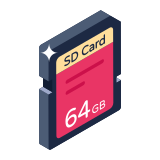
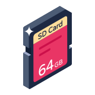
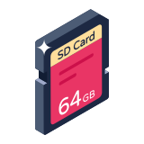

Below you can find what I believe to be a sane default configuration for the Banana Pi R4. These files are available in  and will be included in the OpenWrt firmware image. Some of them require changes like your ISP credentials and access point SSIDs. It is recommended going through them at least once so you can have a better idea of your router configuration. This step has no actionable items, so you can move on to 4. OpenWrt Image.
and will be included in the OpenWrt firmware image. Some of them require changes like your ISP credentials and access point SSIDs. It is recommended going through them at least once so you can have a better idea of your router configuration. This step has no actionable items, so you can move on to 4. OpenWrt Image.
and will be included in the OpenWrt firmware image. Some of them require changes like your ISP credentials and access point SSIDs. It is recommended going through them at least once so you can have a better idea of your router configuration. This step has no actionable items, so you can move on to 4. OpenWrt Image.Boot
Enables Dual-band, Dual-concurrent WiFi so you can make use of both radios on the MT7615 (e.g. 2.4GHz AP + 5GHz AP). The GPON SFP can sometimes take longer to initialize on power on, which can lead to a longer boot time and sporadically getting connection errors on pppoe-wan. To fix this the wan and wan6 interfaces are disabled by default and /etc/rc.local waits for sfp1/eth2 to initialize by looking at the dmesg output and then brings up wan and wan6.
Bash
Copy
# Put your custom commands here that should be executed once
# the system init finished. By default this file does nothing.
# enable DBDC on MT7615
(
sleep 10
wifi down
sleep 5
echo 1 > /sys/kernel/debug/ieee80211/phy0/mt76/dbdc
wifi up
) &
# delay bringing up wan/wan6 until the gpon sfp is ready
(
elapsed=0
interval=2
while true ; do
dmesg | grep "GPON-ONU-34-20BI"
if [ $? -eq 0 ]; then
sleep $interval
ifup wan wan6
break
fi
sleep $interval
elapsed=$((elapsed + interval))
if [ $elapsed -ge 60 ]; then
break
fi
done
) &
exit 0
/etc/rc.local
Network
Enables packet steering with 512 steering flows (best results when benchmarking).
Disables bringing up wan and wan6 on boot to delay bringing up the interfaces.
Bash
Copy
config interface 'loopback'
option device 'lo'
option proto 'static'
option ipaddr '127.0.0.1'
option netmask '255.0.0.0'
config globals 'globals'
option ula_prefix 'auto'
option packet_steering '2'
option steering_flows '512'
config device
option name 'br-lan'
option type 'bridge'
list ports 'lan1'
list ports 'lan2'
list ports 'lan3'
list ports 'eth1'
config interface 'lan'
option device 'br-lan'
option proto 'static'
option ipaddr '192.168.1.1'
option netmask '255.255.255.0'
option ip6assign '60'
config device
option name 'br-wan'
option type 'bridge'
list ports 'wan'
list ports 'eth2'
config device
option name 'wan'
config device
option name 'eth2'
config interface 'wan'
option device 'modem'
option proto 'pppoe'
option username 'xxxxxxxxxxxxxxxxxxxxxxxxx@t-online.de'
option password 'xxxxxxxx'
option ipv6 '1'
option peerdns '0'
option keepalive '30 15'
option auto '0'
config interface 'wan6'
option device 'pppoe-wan'
option proto 'dhcpv6'
option auto '0'
config device
option type '8021q'
option ifname 'eth2'
option vid '7'
option name 'modem'
/etc/config/network
Wireless
Enables 2 wireless APs, one using 2.4GHz to support legacy devices and another with 5GHz.
Default password is set to properinter.net which you can change before building the OpenWrt image or after the first boot.
Bash
Copy
config wifi-device 'radio0'
option type 'mac80211'
option path 'soc/11300000.pcie/pci0000:00/0000:00:00.0/0000:01:00.0'
option band '2g'
option channel 'auto'
option cell_density '0'
option htmode 'HT20'
config wifi-iface 'ap0'
option device 'radio0'
option mode 'ap'
option disassoc_low_ack '0'
option network 'lan'
option ssid 'OpenWrt'
option encryption 'psk2'
option key 'properinter.net'
config wifi-device 'radio1'
option type 'mac80211'
option path 'soc/11300000.pcie/pci0000:00/0000:00:00.0/0000:01:00.0+1'
option cell_density '0'
option band '5g'
option htmode 'VHT80'
option channel 'auto'
config wifi-iface 'ap1'
option device 'radio1'
option mode 'ap'
option disassoc_low_ack '0'
option network 'lan'
option ssid 'OpenWrt5g'
option encryption 'psk2'
option key 'properinter.net'
/etc/config/wireless
DHCP
Replaces dnsmasq with odhcpd and unbound. When odhcpd configures each DHCP lease, it will invoke a script provided by Unbound, which will read the lease file for DHCP-DNS records.
Bash
Copy
config dhcp 'lan'
option interface 'lan'
option start '100'
option limit '150'
option leasetime '12h'
option dhcpv4 'server'
option dhcpv6 'server'
option ra 'server'
option ra_slaac '1'
option ra_flags 'managed-config'
config dhcp 'wan'
option interface 'wan'
option ignore '1'
config odhcpd 'odhcpd'
option maindhcp '1'
option leasefile '/var/lib/odhcpd/dhcp.leases'
option leasetrigger '/usr/lib/unbound/odhcpd.sh'
option loglevel '4'
/etc/config/dhcp
DNS
Uses unbound instead of dnsmasq and DNSSec is enabled by default.
The default DNS resolver is CloudFlare DNS with Google DNS as fallback. .
Bash
Copy
config zone 'auth_icann'
option enabled '0'
option fallback '1'
option url_dir 'https://www.internic.net/domain/'
option zone_type 'auth_zone'
list server 'lax.xfr.dns.icann.org'
list server 'iad.xfr.dns.icann.org'
list zone_name '.'
list zone_name 'arpa.'
list zone_name 'in-addr.arpa.'
list zone_name 'ip6.arpa.'
config zone 'fwd_google'
option enabled '1'
option fallback '1'
option tls_index 'dns.google'
option tls_upstream '1'
option zone_type 'forward_zone'
list server '8.8.4.4'
list server '8.8.8.8'
list server '2001:4860:4860::8844'
list server '2001:4860:4860::8888'
list zone_name '.'
config zone 'fwd_cloudflare'
option enabled '1'
option fallback '0'
option tls_index 'cloudflare-dns.com'
option tls_upstream '1'
option zone_type 'forward_zone'
list server '1.1.1.1'
list server '1.0.0.1'
list server '2606:4700:4700::1111'
list server '2606:4700:4700::1001'
list zone_name '.'
config unbound 'ub_main'
option add_extra_dns '0'
option add_local_fqdn '3'
option add_wan_fqdn '1'
option dhcp_link 'odhcpd'
option dns64 '0'
option domain 'lan'
option domain_type 'static'
option edns_size '1232'
option extended_stats '0'
option hide_binddata '1'
option interface_auto '1'
option listen_port '53'
option localservice '1'
option manual_conf '0'
option num_threads '1'
option protocol 'default'
option rate_limit '0'
option rebind_localhost '1'
option rebind_protection '1'
option recursion 'default'
option resource 'default'
option root_age '9'
option ttl_min '120'
option ttl_neg_max '1000'
option unbound_control '1'
option validator '1'
option verbosity '1'
option enabled '1'
option iface_lan 'lan'
option dhcp4_slaac6 '1'
option validator_ntp '1'
list iface_wan 'wan'
list iface_wan 'wan6'
list iface_trig 'lan'
list iface_trig 'wan'
/etc/config/unbound
Firewall
Defaults to DROP instead of REJECT, drops IPv4 Ping, adds DNS port forwarding for ad block.
Bash
Copy
config defaults
option input 'DROP'
option output 'ACCEPT'
option forward 'DROP'
option synflood_protect '1'
config zone
option name 'lan'
list network 'lan'
option input 'ACCEPT'
option output 'ACCEPT'
option forward 'ACCEPT'
config zone
option name 'wan'
list network 'wan'
list network 'wan6'
option input 'DROP'
option output 'ACCEPT'
option forward 'DROP'
option masq '1'
option mtu_fix '1'
config forwarding
option src 'lan'
option dest 'wan'
config rule
option name 'Allow-DHCP-Renew'
option src 'wan'
option proto 'udp'
option dest_port '68'
option target 'ACCEPT'
option family 'ipv4'
config rule
option name 'Allow-Ping'
option src 'wan'
option proto 'icmp'
option family 'ipv4'
option target 'DROP'
list icmp_type 'echo-request'
config rule
option name 'Allow-IGMP'
option src 'wan'
option proto 'igmp'
option family 'ipv4'
option target 'ACCEPT'
config rule
option name 'Allow-DHCPv6'
option src 'wan'
option proto 'udp'
option dest_port '546'
option family 'ipv6'
option target 'ACCEPT'
config rule
option name 'Allow-MLD'
option src 'wan'
option proto 'icmp'
option src_ip 'fe80::/10'
list icmp_type '130/0'
list icmp_type '131/0'
list icmp_type '132/0'
list icmp_type '143/0'
option family 'ipv6'
option target 'ACCEPT'
config rule
option name 'Allow-ICMPv6-Input'
option src 'wan'
option proto 'icmp'
list icmp_type 'echo-request'
list icmp_type 'echo-reply'
list icmp_type 'destination-unreachable'
list icmp_type 'packet-too-big'
list icmp_type 'time-exceeded'
list icmp_type 'bad-header'
list icmp_type 'unknown-header-type'
list icmp_type 'router-solicitation'
list icmp_type 'neighbour-solicitation'
list icmp_type 'router-advertisement'
list icmp_type 'neighbour-advertisement'
option limit '1000/sec'
option family 'ipv6'
option target 'ACCEPT'
config rule
option name 'Allow-ICMPv6-Forward'
option src 'wan'
option dest '*'
option proto 'icmp'
list icmp_type 'echo-request'
list icmp_type 'echo-reply'
list icmp_type 'destination-unreachable'
list icmp_type 'packet-too-big'
list icmp_type 'time-exceeded'
list icmp_type 'bad-header'
list icmp_type 'unknown-header-type'
option limit '1000/sec'
option family 'ipv6'
option target 'ACCEPT'
config rule
option name 'Allow-IPSec-ESP'
option src 'wan'
option dest 'lan'
option proto 'esp'
option target 'ACCEPT'
config rule
option name 'Allow-ISAKMP'
option src 'wan'
option dest 'lan'
option dest_port '500'
option proto 'udp'
option target 'ACCEPT'
config redirect 'adblock_lan53'
option name 'Adblock DNS (lan, 53)'
option src 'lan'
option proto 'tcp udp'
option src_dport '53'
option dest_port '53'
option target 'DNAT'
option family 'any'
config redirect 'adblock_lan853'
option name 'Adblock DNS (lan, 853)'
option src 'lan'
option proto 'tcp udp'
option src_dport '853'
option dest_port '853'
option target 'DNAT'
option family 'any'
config redirect 'adblock_lan5353'
option name 'Adblock DNS (lan, 5353)'
option src 'lan'
option proto 'tcp udp'
option src_dport '5353'
option dest_port '5353'
option target 'DNAT'
option family 'any'
/etc/config/firewall
SSH
Allow SSH only through the lan interface.
Bash
Copy
config dropbear 'main'
option PasswordAuth 'on'
option Port '22'
option Interface 'lan'
/etc/config/dropbear
Ad Block
Forces DNS resolution using unbound for all DNS requests made on ports 53 , 853 and 5353.
No ad block sources are configured by default.
Bash
Copy
config adblock 'global'
option adb_enabled '1'
option adb_debug '0'
option adb_forcedns '1'
option adb_safesearch '0'
option adb_dnsfilereset '0'
option adb_mail '0'
option adb_report '1'
option adb_backup '1'
option adb_dns 'unbound'
option adb_fetchutil 'curl'
option adb_repiface 'br-lan'
option adb_trigger 'wan'
list adb_zonelist 'lan'
list adb_portlist '53'
list adb_portlist '853'
list adb_portlist '5353'
/etc/config/adblock
SQM
Avoid bufferbloat on pppoe-wan. This is most useful for WiFi clients as the router is very good at handling bufferbloat when using ethernet. The download and upload options are set to 90% of the benchmark on WiFi (500Mbps down / 400Mbps up). SQM is disabled by default for you to run your benchmarks after the first boot, but you can easily enable it using LuCi.
Bash
Copy
config queue 'eth1'
option enabled '0'
option interface 'pppoe-wan'
option download '450000'
option upload '360000'
option qdisc 'cake'
option script 'piece_of_cake.qos'
option linklayer 'ethernet'
option debug_logging '0'
option verbosity '5'
option overhead '48'
/etc/config/sqm
LuCi
Listen only on 192.168.1.1 instead of 0.0.0.0 and redirect HTTP to HTTPS.
Bash
Copy
config uhttpd 'main'
list listen_http '192.168.1.1:80'
list listen_http '[::]:80'
list listen_https '192.168.1.1:443'
list listen_https '[::]:443'
option redirect_https '1'
option home '/www'
option rfc1918_filter '1'
option max_requests '3'
option max_connections '100'
option cert '/etc/uhttpd.crt'
option key '/etc/uhttpd.key'
option cgi_prefix '/cgi-bin'
list lua_prefix '/cgi-bin/luci=/usr/lib/lua/luci/sgi/uhttpd.lua'
option script_timeout '60'
option network_timeout '30'
option http_keepalive '20'
option tcp_keepalive '1'
option ubus_prefix '/ubus'
config cert 'defaults'
option days '397'
option key_type 'ec'
option bits '2048'
option ec_curve 'P-256'
option country 'ZZ'
option state 'Somewhere'
option location 'Unknown'
option commonname 'OpenWrt'
/etc/config/uhttpd